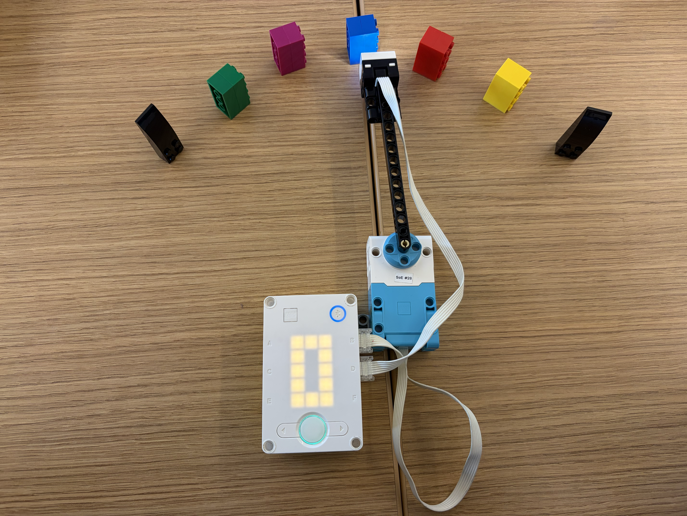
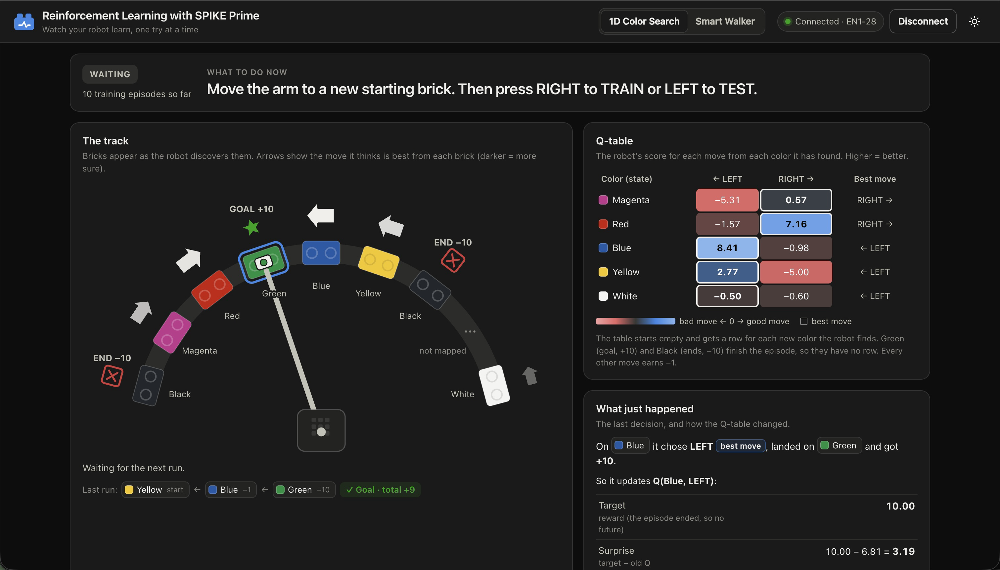
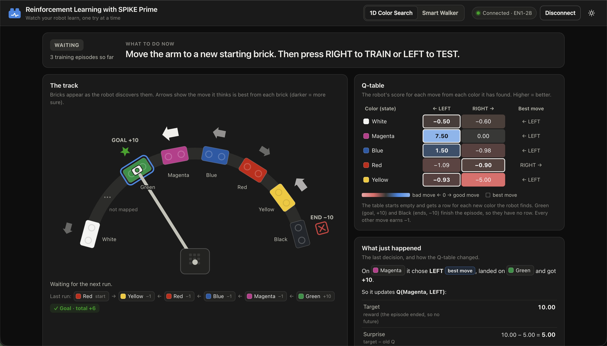

The robot learns the fastest way to reach its goal. First, we had to train it to figure out the arrangement of our colors, since green was the goal and black meant out of bounds. We trained it from multiple starting positions to help it figure out the placement of all the colors. After multiple rounds of training, the robot can figure out the best move to make to reach the green block based on the color it sees. Additionally, we changed the arrangement to see if we could retrain it to figure out a new arrangement.